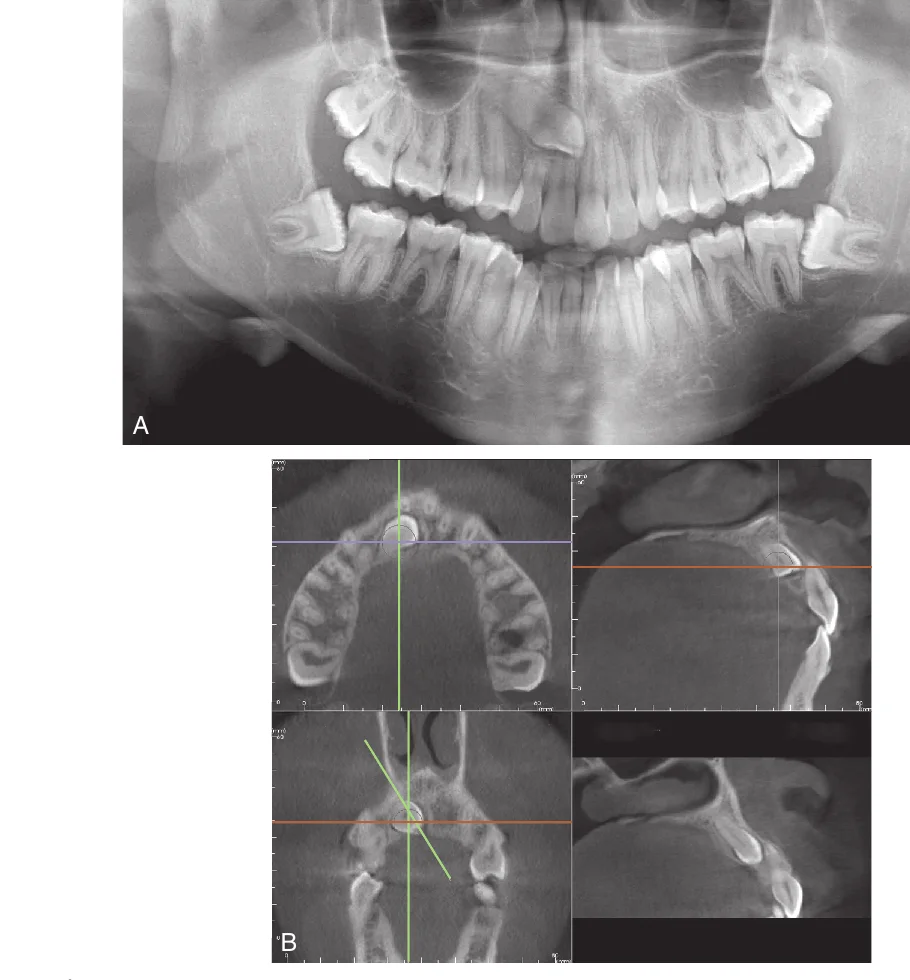

نسخه استخراجشده؛ ترجمه یا تأیید علمی انجام نشده است. وضعیت: captured
کانین دائمی بالا پس از مولر سوم، شایعترین دندان نهفته است — و مهمترین.
سه دلیل برای این اهمیت وجود دارد: مسیر رویش آن طولانیترین مسیر میان همهی دندانهاست، پس بیشترین فرصت برای انحراف را دارد؛ دیر میروید و تا آن زمان دندانهای مجاور جای خالیاش را بستهاند؛ و از نظر بالینی، سنگ بنای زیبایی و عملکرد قوس است.
نهفتگی آن دو الگوی متمایز دارد که پیشآگهی و درمان متفاوتی دارند:
⚠️ خطر خاموش آن، تحلیل ریشهی لترال مجاور است — که بدون هیچ علامتی پیش میرود و تا زمان کشف، بخشی از ریشه از دست رفته است. در موارد شدید، لترال قابل نجات نیست.
👉 و همین است که غربالگری زودهنگام را ضروری میکند: معاینهی لمسی برجستگی کانین در ناحیهی باکال، از حدود ۸ تا ۹ سالگی باید بخشی از معاینهی روتین باشد.

از حدود ۹ تا ۱۰ سالگی، برجستگی کانین باید در وستیبول قابل لمس باشد. اگر نبود، پرچم قرمز است.
سه نشانهی هشدار: نبود برجستگی در وستیبول، عدم تقارن با سمت مقابل، و ماندگاری کانین شیری پس از سن متعارف افتادن.
یافتهی دیگری هم هست که اغلب نادیده میماند: تیپ دیستالی لترال مجاور. کانین نهفته در مسیر خود به ریشهی لترال فشار میآورد و تاجش را به دیستال میراند.
هر کدام از اینها را دیدی، رادیوگرافی بگیر — منتظر نمان. قاعدهی کلی: اگر دندانی در یک سمت رویش کرده و قرینهاش تا ۶ ماه بعد نرسیده، علت را با رادیوگرافی پیدا کن.
پیش از هر تصمیمی باید بدانی دندان کجاست. سه ابزار:
قاعدهی جابهجایی تصویر روی دو پریاپیکال با زاویهی افقی متفاوت: اگر دندان نهفته همجهت با حرکت تیوب جابهجا شود، پالاتال است؛ اگر خلاف جهت، باکال.
اندازهی ظاهری تاج در پانورامیک: تاج بزرگتر و مبهمتر یعنی دورتر از فیلم، پس پالاتال.
CBCT که موقعیت دقیق سهبعدی، زاویهی محور و مهمتر از همه وضعیت ریشهی لترال مجاور را نشان میدهد.
غربالگری را با پانورامیک شروع کن؛ CBCT با میدان دید کوچک را برای وقتی بگذار که پاسخش تصمیم را عوض میکند — از جمله پیش از اکسپوز جراحی.